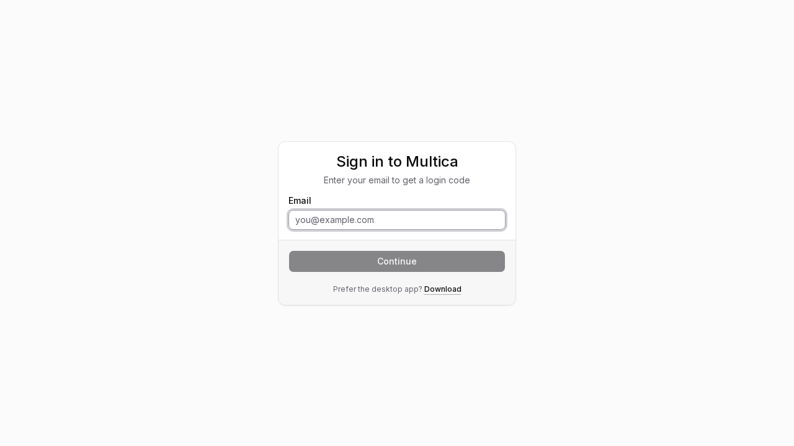
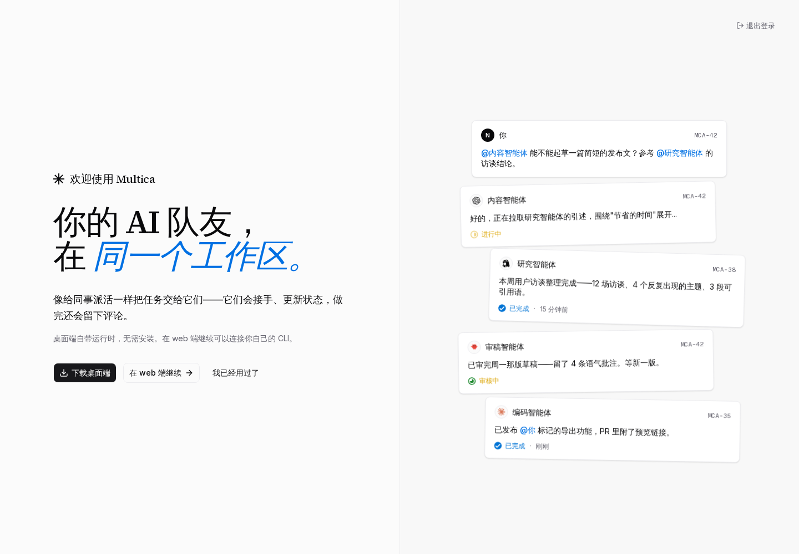
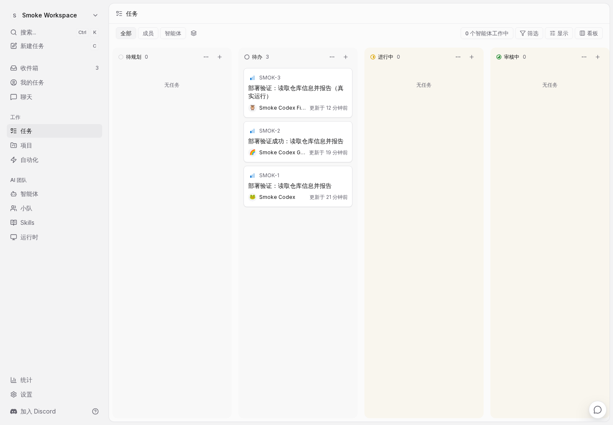
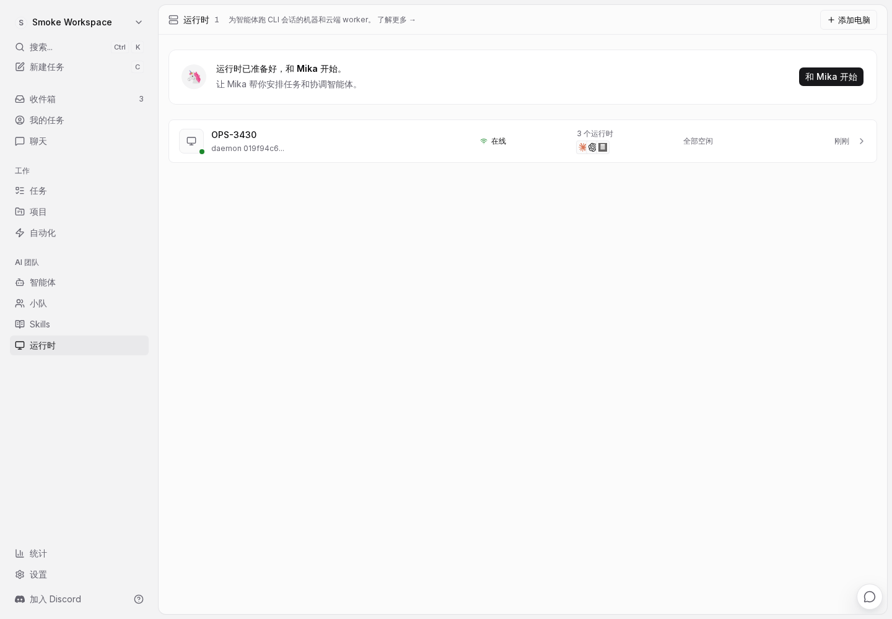
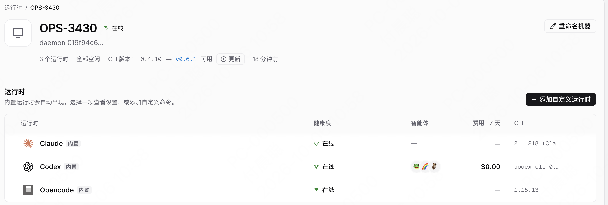
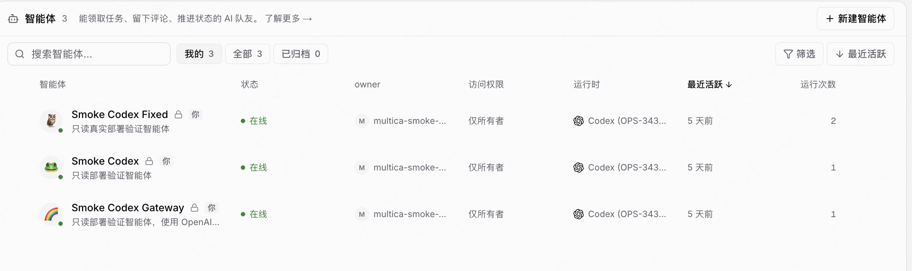
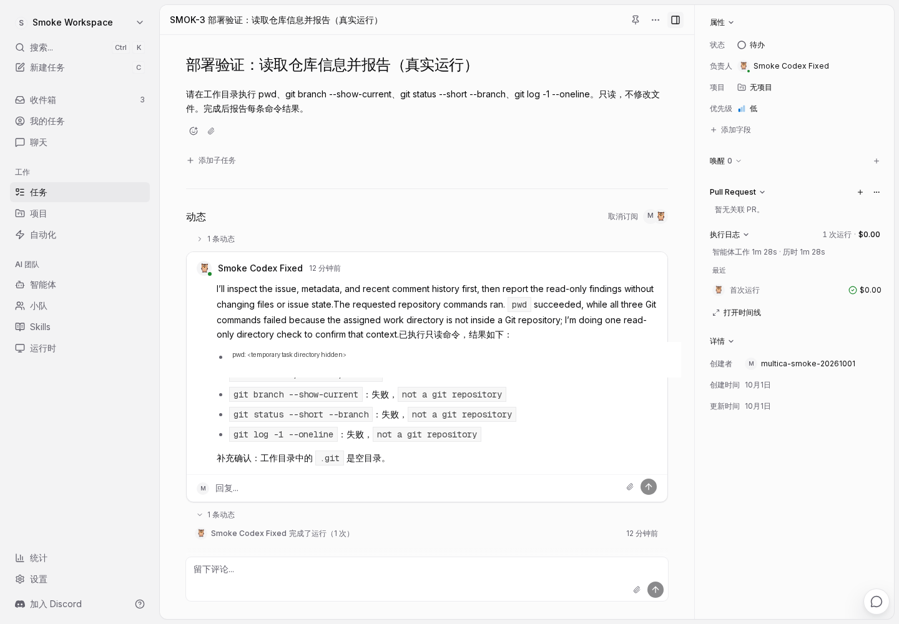

文本开始学习一个开源 AI 开源项目 Multica，该项目后端主要通过 Go 实现，通过这个项目，我们可以学习一个 AI 智能体协作平台的核心实现思路。
1. Multica 是什么
Multica 是一个面向 人类 + AI 智能体 团队的源码公开协作平台。传统的 AI 编程工具通常运行在独立终端里：任务分散、上下文难以共享，执行过程也很难审计。Multica 把任务、智能体、运行时、评论和执行记录放进同一个工作区，让智能体像团队成员一样接收任务并汇报进度。
一次工作的完整路径是：人在看板上创建任务并指定负责人，连接的运行时通过 WebSocket 领取运行，再在本机启动 Claude Code、Codex、Cursor 等受支持的 CLI；运行过程中的消息、命令和结果回写到任务，最后由人进行审核。
主要能力包括：
- 工作区和看板：按团队隔离任务、成员、设置和权限。
- Issues / Projects：管理任务状态、优先级、标签、项目和依赖关系。
- Agent 与 Runtime：把智能体配置和实际执行机器分开，支持本机或云主机上的守护进程。
- Chat：围绕智能体进行对话，消息可以继续进入一次可追踪的运行。
- Autopilot：用定时计划触发周期性任务。
- Skills：把解决过的问题沉淀为团队可复用的技能。
- 审计与治理：保留运行日志、用量、成员角色、工作区权限和人工审核节点。
- 多端和集成：Web、Electron 桌面端、Expo 移动端，以及 Git 服务和聊天渠道集成。
2. 核心概念
Multica 的对象可以分成三层来理解：工作区（workspace）负责组织人和资源，任务（issue）负责记录要完成的工作，智能体（agent）和运行时（runtime）负责执行工作。理解这些对象的关系后，后面的浏览器操作和命令行步骤会更容易。
2.1 工作区
工作区（workspace）是团队共同工作的独立范围。成员、任务、项目、智能体、运行时、设置和权限都属于某个工作区；不同工作区之间的数据和负责人相互隔离。你登录后先选择工作区，之后浏览器地址中的 slug（例如 smoke-workspace）就决定当前正在操作哪个工作区。
2.2 任务
任务（issue）是 Multica 中一项需要完成的工作，也是人和智能体协作的基本单位。任务包含标题、描述、状态、优先级、标签、负责人、评论和历史记录。负责人可以是人类成员、智能体或小队。一个任务可以产生多次运行，因此任务本身记录“要做什么”，运行记录“这一次是怎么做的”。在 Web 界面上，任务可以手动创建，也可以通过智能体创建。
2.3 项目
项目（project）用于把一组相关任务放在同一个目标下管理。项目可以记录整体说明、负责人、进度，并关联代码仓库、目录等资源。任务仍然是实际执行的单位，项目负责提供组织结构和共同上下文。
2.4 智能体
智能体（agent）是工作区中的 AI 协作者配置，不是一个一直运行的进程。它回答的是“谁来做、应该怎么做”：名称和描述说明它擅长什么，指令规定工作方式和边界，模型、Skills、Access 权限、环境变量和绑定的运行时共同决定它如何执行。把任务分配给智能体、在评论中 @ 智能体，或通过对话、自动化触发它时，Multica 才会为它创建一次运行。
2.5 运行时
运行时（runtime）是任务实际执行的机器和机器上的 AI 编程工具。它回答的是“在哪里做、用什么工具做”：运行时机器上运行 Multica daemon，并安装了 Codex、Claude Code 或 OpenCode 等 CLI。运行时不负责定义智能体的身份和工作方法，只负责提供执行环境。
可以把 智能体 和 运行时 理解为 员工 和 办公地点：智能体像一名有职责和工作方法的员工，运行时像员工使用的电脑和办公地点。比如：
- 你可以创建一个
代码审查智能体，要求它只阅读 diff、检查测试并给出意见； - 当它绑定到 Codex 运行时，任务就会在安装了 Codex 的机器上执行
- 如果这台机器离线，智能体的指令、权限和历史仍然保留，只是新的运行会排队等待；把它切换到另一台在线的 Claude Code 运行时后，同一个智能体仍按原来的指令工作，只是执行工具和机器发生了变化。
反过来，一台运行时也可以承载多个智能体。例如同一台开发机可以同时提供“后端开发智能体”“文档智能体”和“测试智能体”的运行环境；它们共享这台机器上的 CLI 能力，但各自的指令、权限、Skills 和任务历史彼此独立。
2.6 运行
运行（run）是智能体的一次具体执行记录。它记录启动时间、使用的运行时、命令调用、输出、模型用量、状态和最终结果。任务可以有多次运行，运行完成也不代表任务一定完成，仍需要人类查看结果并推进任务状态。
2.7 小队
小队（squad）是一组智能体和成员，由一个 leader 智能体负责协调。把任务分配给小队后，Multica 先唤醒 leader；leader 阅读任务上下文，再决定是否把工作交给其他成员。小队适合前端、后端、测试等多种能力共同参与，但创建任务时还无法确定具体负责人的场景。它不会同时启动所有成员，也不会把多个智能体合并成一个新智能体。
2.8 其他常见对象
- skill：可复用的能力包，保存方法、资料和约束，可以挂载给多个智能体。
- 评论（comment）：围绕任务持续讨论和汇报的记录；评论中的
@可以触发智能体继续工作。 - 收件箱（inbox）：成员查看任务分配、提及和订阅通知的地方，智能体不使用收件箱。
- 自动化（autopilot）：按时间表或外部事件自动触发智能体运行，也可以手动运行一次。
2.9 对象之间的关系
一次典型流程是：成员在工作区中创建任务，把相关任务放入项目，再把任务分配给智能体或小队；系统创建运行，运行时上的 daemon 启动 Codex、Claude Code 或其他 CLI；命令输出和最终结果回写到任务，成员在评论和执行日志中进行审核。
2.10 核心软件架构
Multica 的自托管部署和智能体执行由几个相互配合的组件组成：
| 组件 | 主要职责 | 运行位置 |
|---|---|---|
| PostgreSQL | 保存用户、工作区、任务、评论、智能体和运行记录 | Docker Compose 的数据库容器 |
| Go 后端 | 提供 API、认证、数据库迁移、任务调度和 WebSocket | Docker Compose 的 backend 容器 |
| Web 前端 | 提供登录、工作区、任务、智能体和运行时页面 | Docker Compose 的 frontend 容器 |
| Desktop | Electron 桌面客户端，连接同一后端，并提供桌面窗口和本地能力 | 用户电脑 |
| 守护进程（daemon） | 与后端保持 WebSocket 连接，领取运行并启动本机 CLI | 运行时机器 |
| Codex / Claude Code / OpenCode | 根据智能体指令执行命令、读取仓库并返回结果 | 运行时机器 |
Web 和 Desktop 都是用户界面：它们把用户操作发送给 Go 后端。后端是中心协调者，负责鉴权、读写 PostgreSQL、创建运行并把任务派给在线守护进程（daemon）。守护进程不保存工作区数据，它只负责把后端下发的运行转换为本机 CLI 进程，并把实时消息、命令输出和最终结果上传回来。Codex、Claude Code 和 OpenCode 是被守护进程启动的实际执行工具，后端不会直接在自己的容器里执行这些 CLI。
移动端是独立的 Expo/React Native 客户端，也通过 API 使用工作区数据；本文的自托管验证重点放在 Web、Go 后端、PostgreSQL 和本地 daemon 上。
3. 先理解部署后会得到什么
自托管 Compose 会启动三个容器：
| 容器 | 作用 | 本机地址 |
|---|---|---|
postgres |
保存用户、工作区、任务和运行记录 | 只在 Compose 网络内提供 PostgreSQL 端口 |
backend |
Go API、认证、WebSocket、迁移和调度器 | http://localhost:8080 |
frontend |
Next.js Web 界面 | http://localhost:3000 |
智能体守护进程通常运行在另外一台开发机上，通过 API / WebSocket 连接到后端；代码和智能体 CLI 的凭据仍留在运行时所在机器。
本文会验证完整的最小链路：Web、API、数据库、AI 网关、浏览器操作，以及通过本机 Codex CLI 执行一次真实的只读任务。
4. 准备环境
以下命令均需在包含 docker-compose.selfhost.yml 和 README.md 的项目根目录执行。
本次验证使用了：
- Docker Engine 28.x
- Docker Compose v2
- Node.js 22
- pnpm 10.28.2
- 可访问 Docker Hub、npm 和 AI 网关的网络
4.1 安装并检查工具
没有安装 Docker 的读者，先安装 Docker Desktop（Windows / macOS）或 Docker Engine + Compose plugin（Linux）。安装完成后打开终端，逐条执行：
1 | docker --version |
Node.js 应为 22 或更高版本，pnpm 应为 10.28.2。使用 Docker 镜像构建后端时不需要宿主机安装 Go；如果你还要在宿主机直接运行 Go 后端，再按仓库 CONTRIBUTING.md 安装 Go。
4.2 确认端口没有被占用
默认后端使用 8080，前端使用 3000。Linux/macOS 可以执行：
1 | ss -ltn '( sport = :8080 or sport = :3000 )' |
如果命令没有输出，表示端口通常是空闲的。Windows 可以用下面的命令检查：
1 | netstat -ano | findstr "8080 3000" |
端口已经被其他程序使用时，在 .env 中把 PORT 或 FRONTEND_PORT 改成空闲端口，后面访问地址也要同步修改。
4.3 配置网络代理
如果所在网络需要代理，应先让 Docker Engine 和构建容器都能使用代理。宿主机 shell 中的 HTTP_PROXY、HTTPS_PROXY、NO_PROXY 只代表当前终端；Docker Desktop / Docker Engine 还需要在自己的设置中配置代理。不要把代理账号密码写进仓库。
5. 获取源码并创建环境文件
先获取源码并进入项目目录：
1 | git clone https://github.com/multica-ai/multica.git |
复制配置模板：
1 | cp .env.example .env |
.env.example 是模板，.env 是本机真正使用的配置。.env 已被 Git 忽略，里面可以放本机密钥；不要把它提交到公共仓库，也不要把真实密钥贴到博客、Issue 或截图中。
5.1 生成基础密钥
为数据库、JWT 和自托管 Git 集成生成随机值：
1 | openssl rand -hex 32 |
把生成的值分别填入 .env 的 JWT_SECRET、POSTGRES_PASSWORD 和（如果启用自托管 Git）MULTICA_VCS_SECRET_KEY。本地单机验证可以保留默认端口：
1 | POSTGRES_DB=multica |
JWT_SECRET 用于签发登录会话，POSTGRES_PASSWORD 必须和数据库连接配置一致。不要使用示例中的 <随机密码> 字面量，要替换成真正生成的值。
5.2 配置 OpenAI 兼容的 AI 网关
Multica 的 MULTICA_LLM_* 配置用于服务端辅助生成，例如对话标题和后续问题建议；它与守护进程调用的 AI 编程 CLI 凭据是两条独立链路。
最容易理解的方式是直接把变量写到本地 .env：
1 | MULTICA_LLM_API_KEY=<从网关控制台获取的密钥> |
也可以不修改 .env，在启动 Compose 的同一个终端中使用 export 传入：
1 | export MULTICA_LLM_API_KEY='<从网关控制台获取的密钥>' |
MULTICA_LLM_MAX_RETRIES=0 适合第一次验证：每次调用只发一个请求，失败原因更容易判断。生产环境可以根据网关稳定性改为 1 到 5。密钥只放在 .env、shell、密钥管理器或部署平台的 Secret 中，不要提交到 Git。
6. 第一次启动服务
6.1 选择官方镜像还是当前源码
有两种方式：
- 官方镜像：下载已经构建好的后端和前端镜像，速度较快，适合先体验。
- 当前源码构建：使用本 checkout 的代码生成镜像，适合验证源码或准备开发。
两种方式共用同一个 PostgreSQL 服务和 .env 配置。下面先给出官方镜像命令，再给出本次实际使用的源码构建命令。
6.2 使用官方镜像启动
1 | docker compose -f docker-compose.selfhost.yml up -d |
命令解释：-f 选择 Compose 文件，up 创建并启动服务，-d 让服务在后台运行。第一次运行会下载镜像，可能需要几分钟。
6.3 从当前源码构建并启动
1 | docker compose \ |
这里多了 docker-compose.selfhost.build.yml：它把后端和前端的镜像来源改为当前目录的 Dockerfile
--build表示即使本地已有同名镜像也重新构建- 源码构建会下载 Go module、npm 包和 Alpine 系统包，因此第一次构建比官方镜像启动慢。
本次机器使用了 Docker 的系统代理。由于该构建环境中的 Corepack 不能直接继承代理，源码构建时临时让 Node 镜像通过 npm 安装固定版本的 pnpm；这只是构建层的网络适配，项目源码和提交内容没有修改。在普通网络环境中，直接执行上面的 Compose 命令即可；如果你也遇到 Corepack 下载超时，应先确认构建容器能访问 npm registry，再重试。
6.4 查看启动状态和日志
1 | docker compose -f docker-compose.selfhost.yml ps |
看到 postgres 为 healthy、backend 和 frontend 为 Up 才继续下一步。本次实际运行得到的状态是：
1 | multica-postgres-1 Up (healthy) |
如果服务没有启动，先看日志：
1 | docker compose -f docker-compose.selfhost.yml logs --tail=200 backend |
常见的启动顺序是：PostgreSQL 先变为 healthy，后端入口脚本执行数据库迁移，后端开始监听 8080，前端再监听 3000。
自托管 Compose 默认只绑定 127.0.0.1。若要让其他机器访问，应在前面放置 Caddy、nginx 或 Cloudflare Tunnel，负责 TLS 和反向代理；不要直接把容器端口改成公网监听。
7. 最小验证流程（建议照着执行）
下面的验证不依赖浏览器开发工具，使用 curl 就能完成。每一步都能单独判断一层是否正常。
7.1 后端健康检查
1 | curl -sS http://localhost:8080/health |
本次返回：
1 | {"status":"ok","pid":1,"commit":"unknown","started_at":"2026-10-01T03:21:14Z"} |
status=ok 说明 API 进程已经启动，数据库迁移也已在容器入口脚本中完成。
7.2 前端页面
1 | curl -I http://localhost:3000/login |
返回 HTTP/1.1 200 OK。实际浏览器截图如下：

页面展示了邮箱登录表单和桌面端下载入口，说明 Next.js 服务和静态资源都已可用。
7.3 AI 网关请求
部署后用同一组环境变量发一个最小 OpenAI 兼容请求：
1 | curl -sS "$MULTICA_LLM_BASE_URL/chat/completions" \ |
本次网关返回 HTTP 200，模型回复为 multica-smoke-ok，并返回了标准 usage 统计。这一步验证了代理、网关地址、密钥和模型名称四项配置都可用；响应内容中没有保存或回显密钥。
7.4 使用开发验证码登录 API
前端登录采用邮箱验证码。生产环境默认要求配置 Resend 或 SMTP，由邮件服务把验证码发送给用户；如果没有配置邮件服务，登录请求虽然能到达后端，但你收不到验证码。为了让本地部署在没有邮件服务时仍能完成首次验证，Multica 提供了开发环境专用的固定验证码选项。
这里切换到 APP_ENV=development 有两个作用：启用本地调试行为，并允许 MULTICA_DEV_VERIFICATION_CODE 生效。需要注意，发送验证码时后端仍会生成一个随机六位数并把它打印到日志；配置的 888888 是额外允许的本地测试码，只在验证阶段生效，不会替换日志中的随机验证码。这样你既可以使用日志里的随机码，也可以直接使用 888888 完成本地验证。该方式只适合本机或隔离的测试环境，固定验证码会降低登录安全性，不能用于公网部署。
仅用于本地验证时，先把后端切换到开发环境并重新创建后端容器：
1 | export APP_ENV=development |
--force-recreate 的作用是让新环境变量进入已经存在的后端容器；只执行 export 而不重建容器，正在运行的服务不会自动读取新值。生产环境不要使用开发验证码。
如果你使用的是上一节的“当前源码构建”方式，重建时要保留源码构建文件：
1 | docker compose \ |
只使用一个 Compose 文件适用于官方镜像部署；两个文件一起使用适用于当前源码构建。
请求发送验证码：
1 | curl -c cookies.txt -H 'Content-Type: application/json' \ |
另开一个终端查看验证码：
1 | docker compose -f docker-compose.selfhost.yml logs --tail=50 backend |
日志中会出现类似 [DEV] Verification code for smoke@example.com: 123456 的一行。你可以把日志中的随机码填入下面的请求；由于已经配置了开发测试码，也可以直接填 888888：
1 | curl -b cookies.txt -c cookies.txt -H 'Content-Type: application/json' \ |
本次实际验证的 verify-code 返回 HTTP 200，并获得了会话令牌。返回 JSON 中的 token 是短期会话令牌，可以在当前终端临时保存：
1 | export TOKEN='<verify-code 返回的 token>' |
GET /api/me 返回用户资料后，说明认证中间件已经能够识别当前用户。开发验证码只适合本地验证；正式部署应配置 Resend 或 SMTP，并删除 MULTICA_DEV_VERIFICATION_CODE。
验证结束后恢复生产模式，并重新创建后端容器，让旧的开发环境变量从容器中消失：
1 | unset MULTICA_DEV_VERIFICATION_CODE |
如果使用官方镜像，去掉第二个 -f docker-compose.selfhost.build.yml；如果通过邮件服务登录，则从一开始就保持 APP_ENV=production，无需设置开发验证码。
7.5 创建并查询第一个工作区
继续使用上一步的 TOKEN 创建工作区：
1 | curl -sS -H "Authorization: Bearer $TOKEN" \ |
本次返回 HTTP 201，响应包含工作区的 id、slug 和 issue_prefix。再查询工作区列表：
1 | curl -sS -H "Authorization: Bearer $TOKEN" \ |
如果列表中能看到 Smoke Workspace，就证明数据库、认证中间件、成员写入和工作区 API 已经连通。
8. 从浏览器开始使用
下面是本次部署实际用浏览器走过的路径。登录、完成 onboarding 和创建工作区不依赖智能体运行时；但要看到“运行时”页面中的在线机器、创建可执行任务的 Agent，就必须先完成第 9 节的 daemon 接入。截图里的界面文字可能随版本变化，但操作顺序相同。
-
打开
http://localhost:3000/login。输入邮箱，点击 Continue，再输入验证码。开发环境的验证码来自后端日志；正式环境应从邮件中获取。登录页截图见上一节的multica-login.png。 -
首次登录会进入 onboarding。先完成“关于你”，然后在“工作区”步骤选择已有工作区或新建工作区。本次选择了
Smoke Workspace，并通过“跳过”略过可选的运行时介绍。下面的截图来自真实浏览器会话：
-
进入工作区后，左侧可以看到“任务”“智能体”“运行时”等入口。任务看板截图如下：

-
打开“运行时”。如果还没有启动 daemon，这里可能没有在线运行时；完成第 9 节的 9.1 和 9.2 后刷新页面，就会看到 daemon 注册的机器和在线状态。本次截图显示了本地机器，以及 Claude、Codex、OpenCode 三个 CLI：

-
运行时在线后，创建 Agent 并绑定一个运行时；然后创建 Issue，填写标题、描述、优先级，并在“负责人”中选择这个 Agent。Issue 创建后，运行记录会出现在详情页右侧的“执行日志”区域。真实任务详情截图见第 9 节。
浏览器访问 localhost 时，后端和前端都只对本机开放；同一局域网的其他电脑不能直接访问。要让其他人访问，需要域名、TLS 证书和反向代理，并相应调整 FRONTEND_ORIGIN、MULTICA_APP_URL 和代理转发规则。
如果只是临时从自己的电脑访问另一台服务器上的 Multica，可以使用 SSH 本地端口转发，不必把 Docker 端口暴露到局域网。假设 Multica 运行在 root@devvm 上，并且服务仍监听服务器的 3000 和 8080 端口，在自己的电脑上执行：
1 | ssh -N \ |
参数含义是：-N 只建立转发而不执行远程命令；每个 -L 本地端口:远程地址:远程端口 都把本机端口映射到服务器的对应端口。SSH 连接保持打开时，在本地浏览器访问 http://localhost:3000，请求会通过隧道到达服务器上的 Web 服务；需要直接调用 API 或 CLI 时，也可以使用 http://localhost:8080。如果本机的 3000 或 8080 已被占用，可以把左侧端口换成例如 13000 和 18080，浏览器改为访问 http://localhost:13000。
这个隧道只对当前 SSH 用户和当前电脑可用，关闭 SSH 终端或按 Ctrl+C 就会停止转发。它适合个人临时访问和排查问题，不适合作为多人长期访问方案；长期使用仍应配置 HTTPS、域名和反向代理。
9. 接入真正的智能体运行时
要让 Issue 真正调用 Codex、Claude Code 或 OpenCode，需要一台单独的 运行时机器。先区分两个角色：
- 后端是 Docker Compose 中的中心服务，负责用户认证、保存工作区和 Issue、调度任务，并通过 WebSocket 与运行时通信
- daemon 是运行在执行机器上的轻量守护进程，负责保持连接、领取任务、启动本机已经安装的 AI 编程 CLI，再把命令输出和最终结果回传给后端
这台运行时机器需要安装并登录 AI 编程 CLI，同时运行 Multica daemon。完整顺序是：
- 先启动后端和 Web，登录并创建工作区
- 再在运行时机器上安装 CLI、配置并启动 daemon；回到浏览器确认运行时在线
- 最后创建 Agent 并把 Issue 分配给它
9.1 安装并检查 Codex CLI
以 Codex 为例，先按其官方文档安装 CLI 并完成登录。然后在运行时机器上检查版本：
1 | codex --version |
本次实际检测到 codex-cli 0.159.3。CLI 自己的模型网关配置需要在运行时机器上可用；它与服务端的 MULTICA_LLM_API_KEY、MULTICA_LLM_BASE_URL 是两套独立配置。Codex 配置使用 LLM_API_KEY 作为密钥环境变量，网关地址为 https://ai-api-gateway.app.baizhi.cloud/api/openai，模型为 gpt-6.1-sol。请把自己的密钥放在环境变量或密钥管理器中，下面的示例不会把密钥写进命令行参数或博客。
9.2 配置并启动 daemon
第一次在这台运行时机器上使用 CLI 时，先配置它要连接的自托管服务。下面的命令会创建名为 smoke 的本地配置，随后按提示完成登录；--profile smoke 只是示例名称，你也可以换成 local 或其他名称：
1 | multica --profile smoke setup self-host \ |
如果运行时机器和 Multica 服务不在同一台电脑上，不能使用 localhost，应改成运行时机器能够访问的后端和 Web 地址，例如 http://multica.example.com:8080 和 http://multica.example.com:3000。如果登录浏览器不在运行时机器上，还要按照命令提示配置 --callback-host，让 OAuth 回调能够返回这台机器。
setup self-host 已经完成配置和认证时，daemon 通常会随流程启动；也可以明确执行下面的命令重新启动或检查它：
1 | multica --profile smoke daemon start |
状态输出至少应包含 status: "running"，运行时列表应看到 provider: "codex" 且 status: "online"。本次实际运行还同时发现了 Claude 和 OpenCode，因此运行时页面显示 3 个在线 CLI。daemon 通过 WebSocket 接收任务，任务完成后把评论和执行记录回写到后端。

9.3 创建 Agent 并注入 CLI 密钥
从运行时列表复制 Codex 的 runtime_id，再创建一个只读 Agent。推荐使用 --custom-env-stdin，这样密钥不会出现在 shell 历史或进程列表中：
1 | cat > agent-env.json <<'JSON' |
不同 CLI 对环境变量名称的要求可能不同。Codex 配置中的 env_key 是 LLM_API_KEY，因此本次 Agent 同时传入了兼容 OpenAI CLI 的变量名；实际使用时以你所安装 CLI 的配置文件为准。创建成功后可以执行 multica --profile smoke agent list --output json，确认 has_custom_env: true，但 CLI 只会显示变量数量，不会回显密钥。
我们也可以在 web 界面上完成 Agent 创建、管理等操作：

9.4 用真实 Issue 触发一次只读运行
创建一个不会修改仓库的任务，把负责人设为刚才创建的 Agent：
1 | multica --profile smoke issue create \ |
本次返回了 Issue SMOK-3。Multica 自动派发运行；用下面的命令等待状态从 running 变为 completed：
1 | multica --profile smoke issue runs SMOK-3 --output json |
本次真实结果如下：
1 | status: completed |
这个结果说明三件事：任务确实由在线 Codex runtime 执行；只读命令的 stdout/stderr 被回传到 Issue；即使任务工作区没有 Git checkout，Agent 也会报告可诊断的失败原因，而不是伪造成功。浏览器中的任务详情和执行日志截图如下（本机临时目录已经脱敏）：

如果你的项目运行目录需要源码，连接运行时后应在 daemon 的工作区设置中绑定仓库，再把同样的只读任务重新执行。确认只读链路稳定后，再逐步开放写权限、提交和发布权限。
10. 停止和清理
保留数据库、下次快速启动：
1 | docker compose -f docker-compose.selfhost.yml down |
连同数据库卷一起删除（确认不再需要数据后执行）：
1 | docker compose -f docker-compose.selfhost.yml down -v |
11. 小结
Multica 是一个让人类和 AI 智能体共同协作的任务管理平台。人类在工作区中创建 Issue、安排优先级并查看进度，Agent 负责接收任务，Runtime 负责在实际机器上启动 Codex、Claude Code 或 OpenCode 等 CLI。自托管部署通常由 PostgreSQL、Go 后端和 Next.js Web 前端组成；后端保存数据并调度任务，运行时机器上的 daemon 则负责执行本地 CLI 并回传日志。
本文对当前源码进行了一次最小验证：启动三个 Compose 服务，检查数据库健康状态、后端 /health 和前端 /login；使用 OpenAI 兼容网关完成一次模型请求；通过验证码登录 API、创建工作区，并用浏览器走完 onboarding 和工作区页面；最后接入本地 Codex daemon，执行只读 Issue SMOK-3，再用 SMOK-4 检查后端和前端，两个真实任务都完成并返回预期结果。
这些检查证明了从部署、登录、浏览器访问到智能体执行的基本链路可以工作。正式使用时，还应继续配置邮件服务、HTTPS、备份、访问权限和真实代码仓库，并先用只读任务熟悉运行时，再逐步开放修改、提交和发布权限。